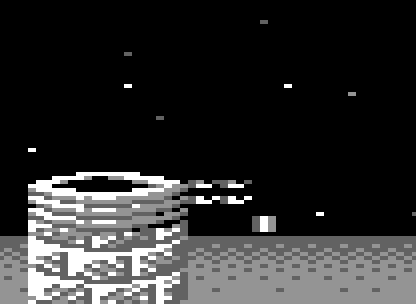

<meta charset="utf-8">
<meta name="viewport" content="width=device-width, initial-scale=1">
<title>Wizball</title>
<link rel="preconnect" href="https://fonts.googleapis.com">
<link rel="stylesheet" href="https://fonts.googleapis.com/css2?family=Lato:wght@400;700;900&family=IBM+Plex+Mono:wght@400;500&display=swap">
<style>
:root{
  --bg:#23262d; --paper:#e9e7e1; --surface:#ffffff; --surface-2:#f1efea; --line:#d5d3cc; --line-soft:#e0ded8;
  --ink:#2f3136; --ink-soft:#55585f; --ink-mute:#80838a;
  --link:#1f5fa8; --link-hover:#154480; --accent:#1f5fa8;
  --amber:#c25a00; --cyan:#1f5fa8; --coral:#d04a3a; --green:#2a8a4a; --violet:#4a5bd6; --hl:#fff0c2;
  --chip:#2f3136; --chip-ink:#ffffff;
  --c64blue:#40318d; --c64grey:#686868;
  --fd:'Lato',system-ui,sans-serif; --fb:'Lato',system-ui,sans-serif; --fm:'IBM Plex Mono',ui-monospace,Menlo,monospace;
  --col:1080px; --gx:68px; --fs:17px; --lh:1.6; --hw:900; --h1:46px; --h2:26px; --sy:48px; --pp:26px; --r:10px;
  --plate-shadow:0 1px 2px rgba(0,0,0,.05),0 4px 14px rgba(0,0,0,.05);
}
*{box-sizing:border-box}
html{background:var(--bg);min-height:100%}
body{background:var(--paper);color:var(--ink);font-family:var(--fb);font-size:var(--fs);line-height:var(--lh);max-width:var(--col);margin:0 auto;min-height:100vh;padding:0 0 4rem}
h1,h2,h3{font-weight:var(--hw);letter-spacing:-.01em;text-wrap:balance;color:var(--ink);margin:0}
h3{font-size:19px;margin:28px 0 8px}
.wrap{padding:0 var(--gx)}
.hero{padding:48px var(--gx) 8px;text-align:left}
.eyebrow{font-family:var(--fm);font-size:12px;letter-spacing:.08em;text-transform:uppercase;color:var(--ink-mute);margin:0 0 10px}
.hero h1{font-size:var(--h1);line-height:1.15;letter-spacing:-.02em;margin:0 0 14px}
.hero .sub{margin:0 0 .6em;color:var(--ink-soft)}
section{padding:var(--sy) 0 24px}
section:last-of-type{border-bottom:none}
.fig{font-family:var(--fm);font-size:12px;letter-spacing:.08em;text-transform:uppercase;color:var(--ink-mute);margin:0 0 10px}
h2.t{font-size:var(--h2);margin-bottom:12px}
.lede{color:var(--ink-soft);margin:0 0 30px}
.plate{background:var(--surface);border:1px solid var(--line);border-radius:var(--r);padding:var(--pp);box-shadow:var(--plate-shadow);margin:0 0 22px}
.cap{font-size:14px;color:var(--ink-mute);margin-top:14px;line-height:1.55}
.cap b{color:var(--ink);font-weight:700}
code{font-family:var(--fm);font-size:.82em;background:var(--chip);color:var(--chip-ink);border-radius:4px;padding:2px 6px;white-space:nowrap}
canvas{display:block;image-rendering:pixelated;image-rendering:crisp-edges}
.row{display:flex;flex-wrap:wrap;gap:8px;align-items:center;margin:12px 0 0}
.btn{font-family:var(--fm);font-size:12.5px;line-height:1.3;background:var(--surface-2);color:var(--ink);border:1px solid var(--line);border-radius:7px;padding:6px 11px;cursor:pointer;user-select:none;-webkit-user-select:none;touch-action:none}
.btn:hover{border-color:var(--accent)}
.btn[aria-pressed="true"]{background:var(--accent);border-color:var(--accent);color:#fff}
.mono{font-family:var(--fm);font-size:13px}
.readout{display:grid;grid-template-columns:repeat(auto-fit,minmax(150px,1fr));gap:6px 18px;margin:12px 0 0;font-size:14px}
.readout span{font-family:var(--fm);font-size:13px}
.k{color:var(--ink-mute);font-size:12.5px;margin-right:6px}
.scroller{overflow-x:auto;border:1px solid var(--line);border-radius:8px;background:#000}
.note{font-size:14px;color:var(--coral);margin:8px 0 0}
table.d{border-collapse:collapse;font-size:14px;margin:8px 0 0;width:100%}
table.d th,table.d td{border-bottom:1px solid var(--line-soft);padding:5px 8px;text-align:left;vertical-align:top}
table.d th{font-weight:700;color:var(--ink-soft);font-size:13px}
table.d td.n{font-family:var(--fm);font-size:13px;text-align:right}
.sw{display:inline-block;width:14px;height:14px;border-radius:3px;vertical-align:-2px;border:1px solid rgba(0,0,0,.25)}
.grid-cards{display:grid;grid-template-columns:repeat(auto-fill,minmax(150px,1fr));gap:10px}
.card{border:1px solid var(--line);border-radius:8px;padding:8px;background:var(--surface);font-size:13px;line-height:1.4}
.card canvas{background:#000;border-radius:4px;margin:0 auto 6px}
.card b{font-family:var(--fm);font-size:12.5px}
.keys{display:grid;grid-template-columns:repeat(8,1fr);gap:4px;max-width:620px}
.key{border:1px solid var(--line);border-radius:5px;padding:5px 2px;text-align:center;font-family:var(--fm);font-size:12px;background:var(--surface-2);color:var(--ink-mute)}
.key.on{background:var(--accent);color:#fff;border-color:var(--accent)}
.key small{display:block;font-size:10px;opacity:.8}
.two{display:grid;grid-template-columns:1fr 1fr;gap:22px}
@media (max-width:760px){.two{grid-template-columns:1fr}:root{--gx:18px;--pp:14px}}
img.ref{display:block;max-width:100%;border-radius:6px;image-rendering:pixelated}
.bars{display:flex;gap:18px;align-items:flex-end;height:150px;margin:6px 0 0}
.bar{width:46px;height:120px;border:2px solid var(--ink-soft);border-top:none;border-radius:0 0 12px 12px;position:relative;overflow:hidden;background:var(--surface-2)}
.bar i{position:absolute;left:0;right:0;bottom:0}
.barl{text-align:center;font-family:var(--fm);font-size:12px;margin-top:4px}
input[type=range]{width:100%}
.sliders{display:grid;grid-template-columns:70px 1fr 40px;gap:4px 10px;align-items:center;font-size:14px;max-width:460px}
</style>
<!-- tabs -->
<header class="hero">
  <p class="eyebrow">Commodore 64 · 1987 · Ocean</p>
  <h1>Wizball</h1>
  <p class="sub">Wizball crashes itself when its clock stops, hides a cheat in the word BOREWIZ, and on level 5 draws a tile from the middle of its sound effects.</p>
</header>
<main class="wrap">

<section id="clock">
  <p class="fig">01 · Protection</p>
  <h2 class="t">Secret: stop the game's clock and it crashes</h2>
  <p>The initialisation sets CIA 2's timer A to count 19,656 cycles (<code>$4CC7</code> + 1), exactly one PAL frame, and makes it the NMI. The NMI handler (<code>$7C61</code>) only clears <code>$85</code>. Late in each frame the band <code>$8BBB</code> stores a non-zero value there, and early in the next the band <code>$8A52</code> ends with a check (<code>$8B04</code>): if <code>$85</code> is not back to 0, the NMI has not come, and the check pulls a byte off the stack so that the band's return goes astray. Anything that stops the timer or its interrupt sets it off.</p>
  <div class="plate"><table class="d">
    <tr><th>Address</th><th>Bytes</th><th>Instruction</th><th>What it does</th></tr>
    <tr><td><code>$8B04</code></td><td class="mono">A7 86</td><td class="mono">LAX $86</td><td>A and X = <code>$FF</code>, set once by the initialisation</td></tr>
    <tr><td><code>$8B06</code></td><td class="mono">DF 86 FF</td><td class="mono">DCP $FF86,X</td><td><span class="mono">$FF86</span> + <span class="mono">$FF</span> wraps round to <code>$0085</code>: decrement it and compare with <span class="mono">$FF</span></td></tr>
    <tr><td><code>$8B09</code></td><td class="mono">F0 03</td><td class="mono">BEQ $8B0E</td><td>it was 0: the NMI came, return normally</td></tr>
    <tr><td><code>$8B0B</code></td><td class="mono">68</td><td class="mono">PLA</td><td>otherwise lose a byte of the return address</td></tr>
  </table><p class="cap">Both instructions that touch <code>$85</code> are undocumented opcodes, and the address wraps round the top of memory, so a search of the code for <code>$85</code> finds only the writes. In the emulator, with CIA 2's interrupts switched off, the check failed on the next frame and the processor ran into screen memory and stopped on a <span class="mono">JAM</span> opcode at <span class="mono">$EA7D</span>, in the landscape screen.</p></div>
  <p>The title screen has its own version, with an <span class="mono">INC $FFB0,X</span> that also wraps round to <code>$85</code>, and a failure path (<code>$9292</code>) that increments a random byte of memory first. One more disguised decrement, at <code>$B589</code>, is <code>LXA #$FF</code> followed by <code>DCP $FF97,X</code>. <code>LXA</code> is an undocumented opcode whose result depends on a constant that varies between 6510 chips; only with the constant <code>$EE</code> does X come out as <code>$EE</code> and the address wrap to <code>$0085</code>. The VICE emulator fixes the constant at <code>$EE</code> with the source comment "needs to be 0xee for wizball". The start-up hides as well: the initialisation reaches CIA 2 only through indexed addresses (<span class="mono">STA $DC8E,X</span> with X = <span class="mono">$7F</span> is <span class="mono">$DD0D</span>) and then overwrites itself with random bytes. The menu and "get ready!" screens compare the hardware vectors with their stored copy every frame (<code>$90F8</code>), flickering the screen if they differ.</p>
</section>

<section id="borewiz">
  <p class="fig">02 · Cheats</p>
  <h2 class="t">Secret: BOREWIZ, and starting on a later level</h2>
  <p>On the title or the player menu, the band <code>$AF85</code> compares each key pressed with the letters B O R E W I Z (<code>$AFCE</code>, in the game's key numbering). After all seven the border turns brown and <code>$BB07</code> is set: collisions stop ending lives, except during "colour completed" and the bonus stage (<code>$7EF4</code>). The letters only have to come seven in a row, which is why Remember's notes can give it as WIZBOREWIZ; a doubled B breaks it, because a wrong key resets the count without being tried as a new first letter. The same band reads the keys 0 to 5: key n starts the next game on level n + 1, as far as the first level the last game did not finish (<code>$AF7D</code>), with the skipped levels marked done and up to five of thrust, anti-grav, beam, catelite and spray given for free (<code>$B10D</code>). Wiztips calls it the continue game feature.</p>
</section>

<section id="stray-tile">
  <p class="fig">03 · Level 5</p>
  <h2 class="t">Bug: level 5 draws a tile that does not exist</h2>
  <p>The tile table has 192 entries, but one byte of the map, at <code>$092B</code>, holds tile number <code>$F8</code> (248). The drawing code does not check, and reads the tile's 25 characters from <code>$2642</code> + 25 × 248 = <code>$3E7A</code>, the middle of two sound-effect records. Most of those bytes are small numbers, which draw as sky, but two are <code>$FF</code>, and glyph <code>$FF</code> of the play character set is the last eight bytes of memory: two unused bytes and the NMI, reset and IRQ vectors. The result sits just to the right of level 5's first well.</p>
  <div class="plate"><div class="two"><div></div><div><canvas id="tileCv" width="200" height="200" style="width:200px;height:200px;background:#000;border-radius:6px"></canvas><div id="tileBytes" class="mono" style="margin-top:8px"></div></div></div>
  <p class="cap">Left: the emulator's screen on level 5, enlarged. Right: the tile's 5 × 5 bytes from <code>$3E7A</code>, drawn with level 5's character set; a 0 is sky, and the star glyphs <code>$01</code>-<code>$5A</code> show whatever stars the game has plotted into them. Remember's 1997 crack lists "matrix in level 5" among the bugs it fixed, and changes exactly this byte to <code>$00</code>.</p></div>
</section>

<section id="shield">
  <p class="fig">04 · The shield</p>
  <h2 class="t">Bug: a shield survives quitting the game</h2>
  <p>The shield timer (<code>$7F06</code>, 40 units, one used every 50 frames) is cleared only when it runs out and in the Wiz-lab. Quitting with Q while paused does not touch it, and nor does starting a new game, so a shield that was running carries into the next game, while that game's icon bar offers the shield as unused. In the emulator: 38 units at the quit, 36 when the new game began, and a collision in the new game cost 8 units and no life. Remember's crack names this as its second fix.</p>
</section>

<section id="secrets">
  <p class="fig">05 · Secrets, quirks and bugs</p>
  <h2 class="t">Things the manual never told you</h2>

  <h3>The spray icon Remember's crack "fixed"</h3>
  <p>Remember's third fix is "the wrong sprite on the spray icon". Every icon in the bar shows what taking it next would give: after thrust is taken the first icon shows anti-grav, after the beam the second shows double. The spray icon follows the same rule, and after the Wiz takes the spray it shows the cat spray, a cat's face with dots very like the catelite's icon. Remember's version of the handler (<code>$7325</code> here) swaps the two images, so its icon shows who holds the spray instead.</p>

  <h3>A hang in the Wiz-lab that no player can reach</h3>
  <p>The lab keeps up to nine permanent weapons (<code>$B116</code>). When a tenth is taken, <code>$B0B0</code> frees the first two slots holding the spray and tries again; with fewer than two sprays among the nine it jumps to itself for ever (<code>$B0D2</code>). In the emulator, with nine other weapons put in the list by hand, choosing the spray froze the game there. A player never gets that far: thrust, anti-grav, beam, double, catelite and blazers each turn their icon to the used-up shape once taken, so at most six slots can hold anything but the spray.</p>

  <h3>An earlier build left in memory</h3>
  <p>The image carries pieces of an older version of the game. After the initialisation sits a second copy of its last part (<code>$ECB4</code>) with different addresses, never run. <code>$BB0D</code> holds an earlier draft of the third Wiztips page, spelling "permanent" correctly where the real page says "permenant". <code>$6EE4</code>, just after the quit code, would mark the current level's colours done and jump into the level-complete sequence, and the test in front of it for the Q key branches to the next instruction either way: a debugging key, disconnected. Tests for three more keys (<code>$9E5A</code>) branch nowhere too. And the name-entry buffer at <code>$BFF4</code> still holds "POO BAG", where a team's two sets of initials go; the game fills the buffer with spaces before every entry, so nobody sees it.</p>
</section>

</main>

<footer style="margin:16px 0 0;padding:22px var(--gx) 0;border-top:1px solid #e0ded8;font-family:'IBM Plex Mono',ui-monospace,Menlo,monospace;font-size:12px;color:#80838a"><a href="https://github.com/gamesexplained/gamesexplained" aria-label="GitHub" style="display:inline-flex;align-items:center;justify-content:center;width:26px;height:26px;margin-left:8px;border:1px solid #e0ded8;border-radius:7px;background:#ffffff;color:#80838a;vertical-align:middle"><svg width="15" height="15" viewBox="0 0 24 24" fill="currentColor" aria-hidden="true"><path d="M12 .297c-6.63 0-12 5.373-12 12 0 5.303 3.438 9.8 8.205 11.385.6.113.82-.258.82-.577 0-.285-.01-1.04-.015-2.04-3.338.724-4.042-1.61-4.042-1.61C4.422 18.07 3.633 17.7 3.633 17.7c-1.087-.744.084-.729.084-.729 1.205.084 1.838 1.236 1.838 1.236 1.07 1.835 2.809 1.305 3.495.998.108-.776.417-1.305.76-1.605-2.665-.3-5.466-1.332-5.466-5.93 0-1.31.465-2.38 1.235-3.22-.135-.303-.54-1.523.105-3.176 0 0 1.005-.322 3.3 1.23.96-.267 1.98-.399 3-.405 1.02.006 2.04.138 3 .405 2.28-1.552 3.285-1.23 3.285-1.23.645 1.653.24 2.873.12 3.176.765.84 1.23 1.91 1.23 3.22 0 4.61-2.805 5.625-5.475 5.92.42.36.81 1.096.81 2.22 0 1.606-.015 2.896-.015 3.286 0 .315.21.69.825.57C20.565 22.092 24 17.592 24 12.297c0-6.627-5.373-12-12-12"/></svg></a><a href="https://discord.gg/3V9GWyRDWV" aria-label="Discord" style="display:inline-flex;align-items:center;justify-content:center;width:26px;height:26px;margin-left:8px;border:1px solid #e0ded8;border-radius:7px;background:#ffffff;color:#80838a;vertical-align:middle"><svg width="15" height="15" viewBox="0 0 24 24" fill="currentColor" aria-hidden="true"><path d="M20.317 4.3698a19.7913 19.7913 0 00-4.8851-1.5152.0741.0741 0 00-.0785.0371c-.211.3753-.4447.8648-.6083 1.2495-1.8447-.2762-3.68-.2762-5.4868 0-.1636-.3933-.4058-.8742-.6177-1.2495a.077.077 0 00-.0785-.037 19.7363 19.7363 0 00-4.8852 1.515.0699.0699 0 00-.0321.0277C.5334 9.0458-.319 13.5799.0992 18.0578a.0824.0824 0 00.0312.0561c2.0528 1.5076 4.0413 2.4228 5.9929 3.0294a.0777.0777 0 00.0842-.0276c.4616-.6304.8731-1.2952 1.226-1.9942a.076.076 0 00-.0416-.1057c-.6528-.2476-1.2743-.5495-1.8722-.8923a.077.077 0 01-.0076-.1277c.1258-.0943.2517-.1923.3718-.2914a.0743.0743 0 01.0776-.0105c3.9278 1.7933 8.18 1.7933 12.0614 0a.0739.0739 0 01.0785.0095c.1202.099.246.1981.3728.2924a.077.077 0 01-.0066.1276 12.2986 12.2986 0 01-1.873.8914.0766.0766 0 00-.0407.1067c.3604.698.7719 1.3628 1.225 1.9932a.076.076 0 00.0842.0286c1.961-.6067 3.9495-1.5219 6.0023-3.0294a.077.077 0 00.0313-.0552c.5004-5.177-.8382-9.6739-3.5485-13.6604a.061.061 0 00-.0312-.0286zM8.02 15.3312c-1.1825 0-2.1569-1.0857-2.1569-2.419 0-1.3332.9555-2.4189 2.157-2.4189 1.2108 0 2.1757 1.0952 2.1568 2.419 0 1.3332-.9555 2.4189-2.1569 2.4189zm7.9748 0c-1.1825 0-2.1569-1.0857-2.1569-2.419 0-1.3332.9554-2.4189 2.1569-2.4189 1.2108 0 2.1757 1.0952 2.1568 2.419 0 1.3332-.946 2.4189-2.1568 2.4189Z"/></svg></a><br>© Games Explained contributors. Write-ups, facts and symbol maps are available under <a href="https://creativecommons.org/licenses/by-sa/4.0/" style="color:#1f5fa8;text-decoration:none">CC BY-SA 4.0</a>; code under <a href="https://opensource.org/licenses/MIT" style="color:#1f5fa8;text-decoration:none">MIT</a></footer>
<script src="../../lib/c64.js"></script>
<script>
// A landscape's characters, drawn from the map the way fetch_left_column $78CF does: four tile rows of
// the level's band, each tile 5 x 5 characters from $2642 + 25 x tile. ram is the game image.
// Levels 0-7 are the eight landscapes (45 tiles from column 0 or 45 of their band, from $B2F0);
// 8 is the Wiz-lab and 9 the finale, two 4-tile halves side by side (the $75DF jump).
function wizLandscape(ram, level) {
  const MAP = 0x0532, TILES = 0x2642;
  const parts = [];
  if (level < 8) {
    const rec = 0xB2F0 + 4 * level, row = ram[rec + 1], first = ram[rec] === 0xFF ? 0 : 45;
    parts.push({ row, col: first, n: 45 });
  } else if (level === 8) parts.push({ row: 8, col: 92, n: 4 }, { row: 12, col: 92, n: 4 });
  else parts.push({ row: 0, col: 92, n: 4 }, { row: 4, col: 92, n: 4 });
  const tilesW = parts.reduce((s, p) => s + p.n, 0), w = tilesW * 5, h = 20;
  const codes = new Uint8Array(w * h), tiles = new Int16Array(tilesW * 4);
  let tx = 0;
  for (const p of parts) for (let i = 0; i < p.n; i++, tx++) for (let r = 0; r < 4; r++) {
    const t = ram[MAP + 96 * (p.row + r) + p.col + i];
    tiles[r * tilesW + tx] = t;
    for (let y = 0; y < 5; y++) for (let x = 0; x < 5; x++)
      codes[(r * 5 + y) * w + tx * 5 + x] = ram[(TILES + 25 * t + 5 * y + x) & 0xFFFF];
  }
  const block = ram[0xB31C + 2 * level] | ram[0xB31D + 2 * level] << 8;   // the level's glyphs, copied to $FD00
  return { w, h, codes, tiles, tilesW, parts, block };
}
// The play character set $F800-$FFFF for a level: the loaded glyphs, the level's block at $FD00, and
// glyph $FF, which is the six hardware-vector bytes the initialisation copies from $B62D.
function wizCharset(ram, level) {
  const cs = new Uint8Array(2048);
  cs.set(ram.subarray(0xF800, 0xFD00), 0);
  const L = wizLandscape(ram, level);
  cs.set(ram.subarray(L.block, L.block + 760), 0x500);
  cs[0x7F8] = 0; cs[0x7F9] = 0; cs.set(ram.subarray(0xB62D, 0xB633), 0x7FA);
  return cs;
}
if (typeof module !== 'undefined' && module.exports) module.exports = { wizLandscape, wizCharset };

</script>
<script>
(function () {
  'use strict';
  const PAL = ['#000000', '#ffffff', '#813338', '#75cec8', '#8e3c97', '#56ac4d', '#2e2c9b', '#edf171',
               '#8e5029', '#553800', '#c46c71', '#4a4a4a', '#7b7b7b', '#a9ff9f', '#706deb', '#b2b2b2'];
  const $ = id => document.getElementById(id);
  const needSite = 'This drawing reads the game\'s bytes from listing.json, which the built site serves: open the page from the site, not from disk.';
  if (!window.C64) { $('tileBytes').textContent = needSite; return; }
  C64.load('listing.json').then(G => {
    const ram = G.ram;
    /* the stray tile */
    {
      const cs = wizCharset(ram, 4), tc = $('tileCv').getContext('2d');
      tc.fillStyle = '#000'; tc.fillRect(0, 0, 200, 200);
      const bytes = [];
      for (let y = 0; y < 5; y++) for (let x = 0; x < 5; x++) {
        const code = ram[0x3E7A + 5 * y + x]; bytes.push(code);
        for (let py = 0; py < 8; py++) {
          const bits = code === 0 ? 0 : cs[code * 8 + py];
          for (let p = 0; p < 4; p++) {
            const q = (bits >> (6 - 2 * p)) & 3;
            if (!q) continue;
            tc.fillStyle = PAL[[0, 11, 12, 1][q]]; tc.fillRect(x * 40 + p * 10, y * 40 + py * 5, 10, 5);
          }
        }
        tc.strokeStyle = 'rgba(255,255,255,.15)'; tc.strokeRect(x * 40 + .5, y * 40 + .5, 39, 39);
      }
      $('tileBytes').innerHTML = [0, 1, 2, 3, 4].map(y => bytes.slice(5 * y, 5 * y + 5).map(b => b.toString(16).toUpperCase().padStart(2, '0')).join(' ')).join('<br>');
    }
  }).catch(e => { $('tileBytes').textContent = needSite + ' (' + e.message + ')'; });
})();
</script>
